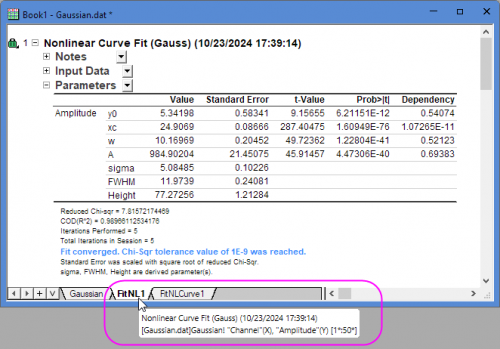

Minimieren oder erweitern Sie die Tabellen, indem Sie auf dieses Element links von jeder Tabelle klicken.
Analyseoperationen, die zum Beispiel mit der nichtlinearen Kurvenanpassung oder einem anderen statistischen Hilfsmittel von Origin/OriginPro durchgeführt werden, erstellen detaillierte Analyseberichtsblätter. Diese Blätter enthalten Tabellen, die in einer Baumstruktur angeordnet sind. Sie können jeden Zweig erweitern oder reduzieren, um die Tabellen anzuzeigen bzw. zu verbergen. Die Abbildung zeigt einen typischen Analysebericht, der während dem Ausführen des Hilfsmittels nichtlinearer Fit erstellt wurde.
Beachten Sie, dass die Informationen in jedem Zweig unabhängig voneinander mit verschiedenen Menübefehlen bearbeitet werden können. Klicken Sie auf den nach unten weisenden Pfeil hinter dem Zweignamen oder klicken Sie mit der rechten Maustaste auf eine Zelle der Tabelle, um das Kontextmenü aufzurufen.
Minimieren oder erweitern Sie die Tabellen, indem Sie auf dieses Element links von jeder Tabelle klicken. |
Über eine Minisymbolleiste können Berichtsblattzellen Namen und Notizen erhalten. |
| Kontextmenübefehl | Kommentare | ||
|---|---|---|---|
|
Benutzerkommentare |
Sie können Kommentare zu einer Tabelle im Berichtsdatenblatt hinzufügen. Um Kommentare hinzuzufügen, klicken Sie mit der rechten Maustaste auf einen Zweigtitel und wählen Sie Benutzerkommentare. Geben Sie Ihre Kommentare in das Textfeld ein. | ||
|
Fußnote kopieren |
Die Fußnoten, die sich unmittelbar unter der Berichtstabelle befinden, beinhalten Informationen über statistische Testergebnisse, Kurvenanpassungen usw. Beachten Sie, dass Sie die Fußnoten nicht direkt kopieren können, sondern diesen Kontextmenübefehl verwenden können, um den Inhalt einer Fußnote in die Zwischenablage zu kopieren. | ||
|
Alle geöffneten Tabellen kopieren |
Verwenden Sie den Befehl Alle geöffneten Tabellen kopieren, um alle erweiterten Tabellen im aktuellen Berichtsblatt zu kopieren und in ein Diagramm-, Arbeitsblatt- oder ein Layoutfenster einzufügen. Wenn Sie die Tabellengruppe in ein Diagramm oder ein Arbeitsblatt einfügen, können Sie sie entweder als Text/Werte ohne Verknüpfungen einfügen. Dieser Menübefehl kann verwendet werden, um mehrere Tabelle gleichzeitig zu kopieren und einzufügen, indem Tabellen selektiv erweitert bzw. minimiert werden. | ||
|
Alle geöffneten Tabellen kopieren (HTML) |
Kopieren Sie alle geöffneten Tabellen, ausschließlich der Diagramme, und fügen Sie sie als HTML-Tabelle(n) in eine Excel-/Word-Seite ein. Um zu verhindern, dass eine Tabelle in die Kopieroperation eingeschlossen wird, minimieren Sie die Tabelle. | ||
|
Alle geöffneten Zweige als Bild kopieren |
Verwenden Sie das Menü Alle geöffneten Zweige als Bild kopieren, um alle erweiterten Zweige (einschließlich Tabellen und Diagramme) als ein Bild zu kopieren und es dann in ein Diagramm-/Layoutfenster oder Word, PowerPoint etc. einzufügen. | ||
|
Tabelle(ntext) kopieren |
Verwenden Sie den Befehl Tabellen(text) kopieren, um den Tabelleninhalt zu kopieren und ihn in ein Diagramm-, Arbeitsblatt- oder ein Layoutfenster einzufügen. Wenn Sie die Tabelle in ein Diagramm oder ein Arbeitsblatt einfügen, können Sie entweder Einfügen oder Verknüpfung einfügen. Die in ein Diagramm eingefügte Tabelle ist bearbeitbar. Sie können doppelt darauf klicken, um den Dialog zum Bearbeiten der Tabelle zu öffnen und jede gewünschte Änderung vorzunehmen. Anschließend können Sie auf Tabelle aktualisieren klicken, um den Dialog zu schließen und die Änderungen der Tabelle im Diagramm zu übernehmen. | ||
|
Transponierten Tabelle(ntext) kopieren |
Verwenden Sie den Befehl Transponierten Tabellen(text) kopieren, um den Tabelleninhalt zu kopieren und ihn in ein Diagramm-, Arbeitsblatt- oder ein Layoutfenster einzufügen. Wenn Sie die Tabelle in ein Diagramm oder ein Worksheet einfügen, können Sie entweder Einfügen oder Link einfügen und transponieren. Ähnlich wie beim Menübefehl Tabellen(text) kopieren wird die Tabelle in ein Diagramm eingefügt und ist bearbeitbar. | ||
|
Tabelle kopieren (HTML) |
Kopieren Sie die ausgewählten Tabelle und fügen Sie sie als HTML-Tabelle(n) in eine Excel-/Word-Seite ein. | ||
|
An Layout senden |
Kopieren Sie die ausgewählte einzelne Berichtstabelle in ein neues Arbeitsblatt und bewahren Sie ihren Stil. Fügen Sie dann dieses Arbeitsblatt in das zuletzt aktive Layout ein. Falls es kein Layoutfenster im Projekt gibt, wird ein neues Layout zum Kopieren erstellt. Das Arbeitsblatt verfügt über den Link der Berichtstabelle. Wenn die Berichtstabelle geändert wird, werden dieses neue Arbeitsblatt und Layout automatisch aktualisiert. | ||
|
An Word senden |
Kopieren Sie die ausgewählte einzelne Berichtstabelle in eine neue/die zuletzt aktive Word-Datei. | ||
|
An PowerPoint senden |
Kopieren Sie die ausgewählte einzelne Berichtstabelle in eine neue/die zuletzt aktive PowerPoint-Datei. | ||
|
Alle offenen Zweige an Word senden |
Kopieren Sie alle offenen Zweige der Berichtstabelle in eine neue/die zuletzt aktive Word-Datei. | ||
|
Alle offenen Zweige an PowerPoint senden |
Kopieren Sie alle offenen Zweige der Berichtstabelle in eine neue/die zuletzt aktive PowerPoint-Datei. | ||
| Eine Kopie als neues Blatt erstellen |
Verwenden Sie den Befehl Kopie als neues Blatt erstellen, um einen Tabelleninhalt in ein neues Blatt zu kopieren. Origin fügt der Mappe ein neues Blatt hinzu und fügt den Tabelleninhalt in dieses Blatt ein. | ||
|
Eine transponierte Kopie als neues Blatt erstellen |
Der Menübefehl Transponierte Kopie erstellen tut im Grunde das Gleiche wie der Befehl Kopie erstellen, in diesem Fall ist die eingefügte Tabelle aber transponiert. | ||
|
ASCII exportieren ... |
Exportieren Sie den aktuellen Zweig der Tabelle als ASCII-Datei. Der exportierte Dateiname wird zusammen mit dem vollständigen Pfad als Hyperlink im Meldungsprotokoll abgelegt (auf der linken Seite des Arbeitsberichs festgepinnt). Klicken Sie auf den Hyperlink, um die ASCII-Datei direkt zu öffnen. | ||
|
Erweitern |
Alle Zweige werden erweitert. | ||
|
Reduzieren |
Alle Zweige werden reduziert. | ||
|
Rekursiv erweitern |
Dieser Zweig und alle Unterzweige werden erweitert. | ||
|
Rekursiv minimieren |
Dieser Zweig und alle Unterzweige werden minimiert. | ||
|
Zweigkonfiguration speichern |
Erweitern Die Konfiguration wird unter \UFF\Themes\AnalysisAndReportTable\0-AnalysisName-Default.ort gespeichert. Jedes Analysehilfsmittel kann eine Konfigurationsdatei haben.
| ||
|
Parameter ändern |
Öffnen Sie den Dialog mitsamt den Parametern, die mit der aktuellen Ausgabe verbunden sind. Das Gleiche geschieht durch Klicken auf das Operationsschloss (z. B. | ||
|
Alle Diagramme zurücksetzen |
Alle eingebetteten Diagramme werden zurückgesetzt, um die Standardeinstellungen anzuwenden. | ||
|
Datensatzidentifizierer |
Der in den Berichtstabellen angezeigte Datensatzidentifizierer wird geändert. Wählen Sie <Benutzerdefiniert> im Kontextmenü. Um einen benutzerdefinierten Identifizierer festzulegen, können Sie @ Substitution verwenden. | ||
|
Diagramme des gleichen Typs in einem Graph anordnen |
Diagramme des gleichen Typs werden in einer Grafik angeordnet. Diese Option ist nur verfügbar, wenn es mehrere Diagrammfenster in einem Diagrammzweig der Ausgabe gibt. | ||
|
Format kopieren/einfügen |
Sie können den Menübefehl Format kopieren verwenden, um Tabellenformateinstellungen einer Tabelle zu kopieren und diese Einstellungen auf eine andere Tabelle anwenden, indem Sie den Menübefehl Format einfügen verwenden (siehe unten). | ||
| Öffnen Sie den Dialog Stellen im Bericht, um die Stellen der numerischen Daten in der aktuellen Tabelle festzulegen. Aktivieren Sie das Kontrollkästchen Speichern als Standard in dem Dialog Stellen im Bericht. Die Einstellungen für die Stellen wird an die Gruppe Stellen im Bericht auf der Registerkarte Zahlenformat des Dialogs Option weitergegeben und auf alle Berichtsblätter angewendet. Hinweis: Nach einer nichtlinearen Kurvenanpassung oder Peakanalyse dürfen Sie im Berichtsblatt nicht die Stellen der Tabelle Parameter mit diesem Bedienelement aktualisieren. Öffnen Sie den Dialog Parameter ändern, gehen Sie zur Registerkarte Parameter und nehmen Sie die Änderungen in der Spalte Signifikante Stellen vor. | |||
|
Ansicht |
Zeilen- und Spaltenkopfzeilen in Tabellen sind standardmäßig verborgen. Wählen Sie Spaltenkopf oder Zeilenkopf, um sie ein- (Häkchen wird angezeigt) oder auszuschalten (kein Häkchen wird angezeigt). Wählen Sie Zeilengitter oder Spaltengitter, um die Gitternetzlinien der Tabelle ein- oder auszuschalten. |
Das Analyseberichtsblatt beinhaltet hin und wieder eingebettete Diagramme wie dieses:
Dieses eingebettete Diagramm ist ein vollständig bearbeitbares Origin-Diagramm. Sie können es mit einem Doppelklick in einem temporären Fenster öffnen. Sobald Sie Ihre Änderungen in dem temporären Diagramm gemacht haben, klicken Sie auf die SchaltflächeZurück  in der Titelleiste des Fensters. Dies schließt das temporäre Diagramm und aktualisiert das eingebettete Berichtsblattdiagramm im Blatt.
in der Titelleiste des Fensters. Dies schließt das temporäre Diagramm und aktualisiert das eingebettete Berichtsblattdiagramm im Blatt.
Um den Standard aller Diagramme wiederherzustellen, klicken Sie mit der rechten Maustaste auf das Berichtsblatt und wählen Sie Alle Diagrame zurücksetzen.
Anstatt oder manchmal auch zusätzlich zu der Erstellung von Analyseberichtsblättern erzeugen manche Analyseoperationen einfach nur normale Arbeitsblattspalten für die Ausgabe (zum Beispiel X- und Y-Spalten für Kurvenanpassungswerte). Diese Ausgabespalten werden mit einem Schlosssymbol gekennzeichnet (falls der Modus zum Neuberechnen auf Manuell oder Automatisch gesetzt wurde). Dieses Symbol kennzeichnet Spalten, die für die Bearbeitung gesperrt sind.
In dem Dialog Stellen im Bericht können Sie die Stellen der numerischen Daten in der aktuellen Tabelle festlegen.
Um diesen Dialog zu öffnen:
| Standard Dezimalstellen |
Zeigen Sie die Stellen in der aktuellen Tabelle entsprechend der Einstellung im Kombinationsfeld Anzahl der Dezimalstellen auf der Registerkarte Zahlenformat des Dialogs Optionen (Einstellungen: Optionen). |
|---|---|
| Dezimalstellen festlegen = | Die Anzahl der Nachkommastellen, die angezeigt werden. Geben Sie den Wert der Dezimalstellen im Feld Dezimalzahl ein oder wählen Sie sie in der Liste aus. Dieser Wert = die maximale Anzahl der nach dem Komma angezeigten Stellen. |
| Signifikante Stellen= | Die Anzahl der angezeigten Stellen Geben Sie den Wert im Textfeld Signifikante Stellen ein. |
Aktivieren Sie dieses Kontrollkästchen, um die Einstellung der Stellen als Standard dieser Analyse zu speichern. Alle Berichtsblätter, die mit diesem Analysehilfsmittel erzeugt werden, verwenden diese Einstellung. Beachten Sie, dass sie die Einstellung in Stellen im Bericht auf der Registerkarte Zahlenformat des Dialogs Optionen nicht überschreibt.
Der Dialog Berichtsstil bietet eine Oberfläche zum Anpassen des Tabellenstils des Berichtsblatts von Origin. Weitere Einzelheiten zu Anpassen des Berichtsstils finden Sie auf dieser Seite.
Wenn Sie die Maus über den Reiter des Analyseberichtsblatts bewegen, wird ein Tooltipp gezeigt mit dem Namen der oberen Tabelle des Berichtsblatt und den Eingabedaten. 